Dein Monat. Klar im Blick.Your month. Crystal clear.
Monatsklar ist das Haushaltsbuch für Windows, das deine Finanzen dort lässt, wo sie hingehören: auf deinem PC. Ausgaben erfassen, Kontoauszüge importieren, Budgets planen – ganz ohne Cloud und Bankzugang.Monatsklar is the budget book for Windows that keeps your finances where they belong: on your PC. Track spending, import bank statements, plan budgets – without cloud or bank logins.
Erste SchritteGetting startedWindows 10 (1809) oder neuer · Deutsch & Englisch · Hell & DunkelWindows 10 (1809) or later · English & German · Light & dark
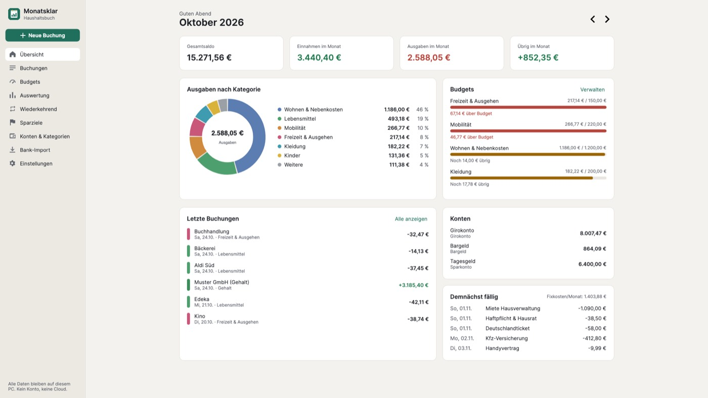
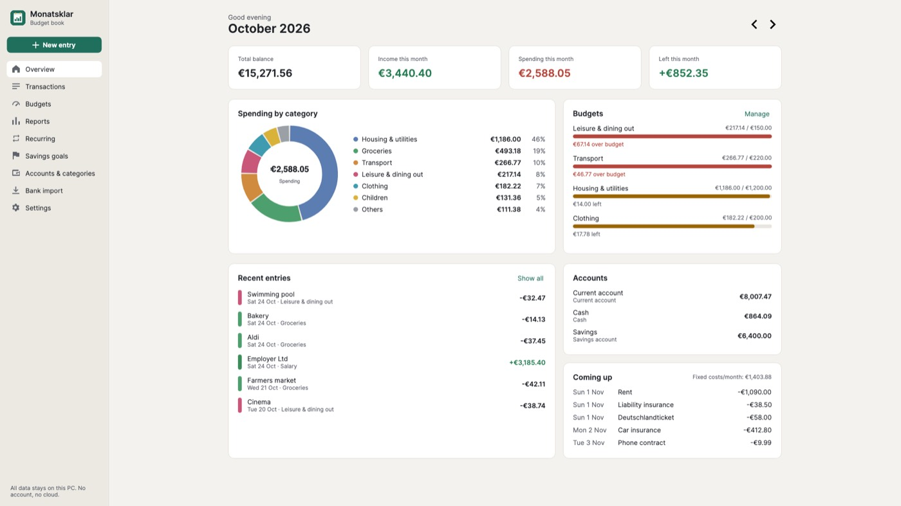
Ohne Abo, ohne KontoNo subscription, no account
Dokumente\Monatsklar – sichern, verschieben, verschlüsseln, wie du willst.Your book lives in Documents\Monatsklar – back it up, move it, encrypt it as you like.Alles, was ein Haushaltsbuch brauchtEverything a budget book needs
Schlank, schnell und komplett per Tastatur bedienbar.Lean, fast and fully keyboard operable.
Buchung in SekundenEntries in seconds
Strg+N, Betrag, Enter. Empfänger werden vorgeschlagen, die passende Kategorie gleich mit. Beträge lassen sich aufteilen.
Ctrl+N, amount, Enter. Payees are suggested along with their usual category. Amounts can be split.
Mehrere KontenMultiple accounts
Girokonto, Bargeld, Sparkonto, Kreditkarte. Umbuchungen zwischen eigenen Konten zählen nicht als Ausgabe.
Current account, cash, savings, credit card. Transfers between your own accounts don't count as spending.
Kontoauszug importierenImport bank statements
CSV von Sparkasse, ING, DKB, comdirect, Volksbank und Raiffeisenbank wird erkannt, andere Banken ordnest du selbst zu. Duplikate werden übersprungen.
CSV exports from Sparkasse, ING, DKB, comdirect, Volksbank and Raiffeisenbank are detected; map any other bank yourself. Duplicates are skipped.
MonatsbudgetsMonthly budgets
Pro Kategorie ein Budget – und sofort sehen, wie viel noch übrig ist. Auf Wunsch aus dem Durchschnitt vorgeschlagen.
A budget per category – see instantly what is left. Optionally suggested from your average.
Wiederkehrende BuchungenRecurring items
Miete, Abos, Versicherungen, Gehalt: wöchentlich bis jährlich, fällige Posten werden beim Start automatisch gebucht.
Rent, subscriptions, insurance, salary: weekly to yearly; due items are booked automatically at start.
Auswertung in EuroReports in real amounts
Ausgaben nach Kategorie, Verlauf über 12 Monate, Sparquote – für Monat, Quartal oder Jahr. Export für Excel und Druckbericht.
Spending by category, 12-month trend, savings rate – by month, quarter or year. Export for Excel and a printable report.
SparzieleSavings goals
Zielbetrag und Zieldatum festlegen – Monatsklar zeigt den Fortschritt und die nötige Monatsrate.
Set a target amount and date – Monatsklar shows progress and the monthly amount needed.
PasswortschutzPassword protection
Optional verschlüsselt mit AES-256. Ohne dein Passwort kann niemand die Datei lesen.
Optional AES-256 encryption. Without your password, nobody can read the file.
Tägliche SicherungDaily backup
Beim Start wird automatisch gesichert (die letzten 14 Tage), Wiederherstellen mit wenigen Klicks.
An automatic backup at start (last 14 days are kept); restore in a few clicks.
Gemeinsamer HaushaltShared household
Buch auf NAS, Netzlaufwerk oder USB-Stick legen und auf beiden PCs öffnen – ganz ohne Cloud.
Keep the book on a NAS, network drive or USB stick and open it on both PCs – no cloud needed.
Hell & Dunkel, DE & ENLight & dark, EN & DE
Folgt Windows oder deiner Wahl. Mit Bildschirmleser nutzbar.
Follows Windows or your choice. Screen-reader friendly.
TastenkürzelKeyboard shortcuts
Strg+1…9 wechselt die Seiten, Strg+F springt zur Suche.
Ctrl+1…9 switches pages, Ctrl+F jumps to search.
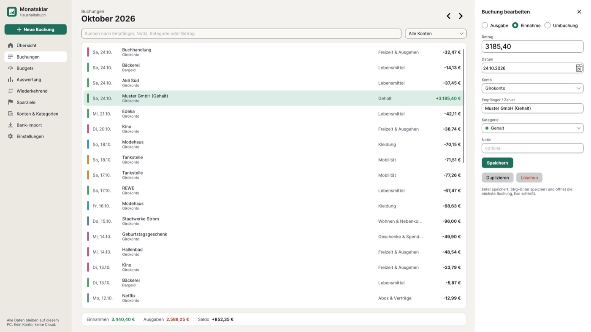
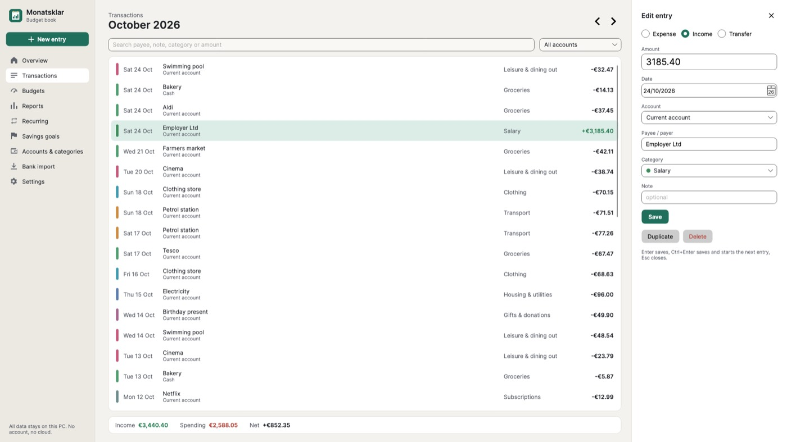
Buchungen erfassen und findenAdd and find transactions
- Einnahme, Ausgabe oder Umbuchung
- Suche nach Empfänger, Notiz, Kategorie oder Betrag
- Filter nach Konto, Monat für Monat blättern
- Betrag auf mehrere Kategorien aufteilen
- Income, expense or transfer
- Search by payee, note, category or amount
- Filter by account, page month by month
- Split an amount across categories
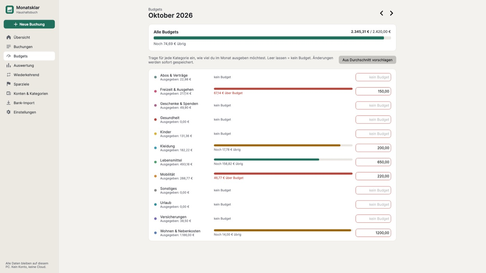
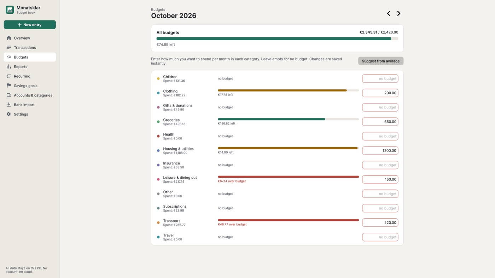
Budgets mit klarer AmpelBudgets at a glance
- Monatsbudget je Kategorie oder Hauptkategorie
- „Noch … übrig“ bzw. „… über Budget“
- Vorschlag aus dem Durchschnitt der letzten drei Monate
- Monthly budget per category or parent category
- “… left” or “… over budget”
- Suggestions from your three-month average
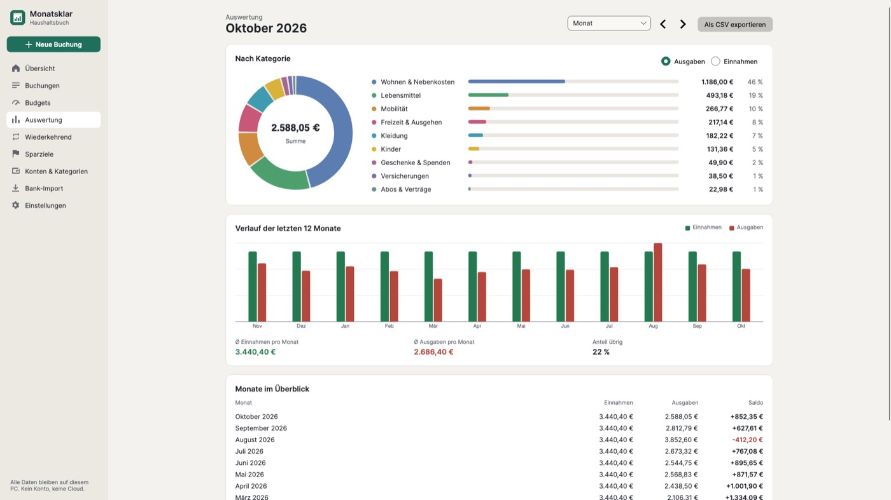
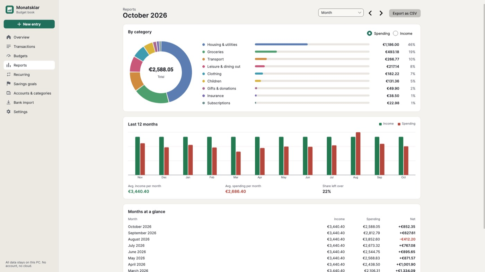
Auswertung, die man verstehtReports that make sense
- Ausgaben nach Kategorie in Euro und Prozent
- Verlauf der letzten 12 Monate, Ø Einnahmen und Ausgaben, Sparquote
- Zeitraum Monat, Quartal, Kalenderjahr oder letzte 12 Monate
- Export für Excel (CSV) und Druckbericht zum Speichern als PDF
- Spending by category in amounts and percent
- 12-month trend, average income and spending, savings rate
- Month, quarter, calendar year or last 12 months
- Export for Excel (CSV) and a printable report you can save as PDF
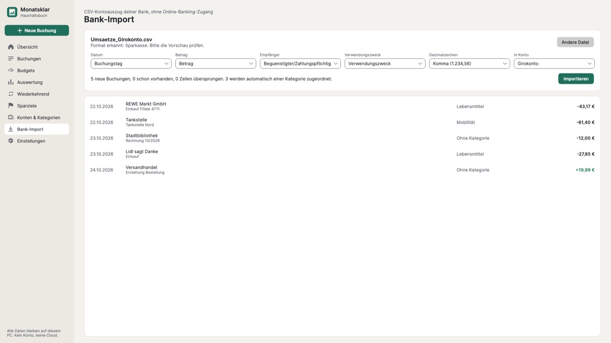
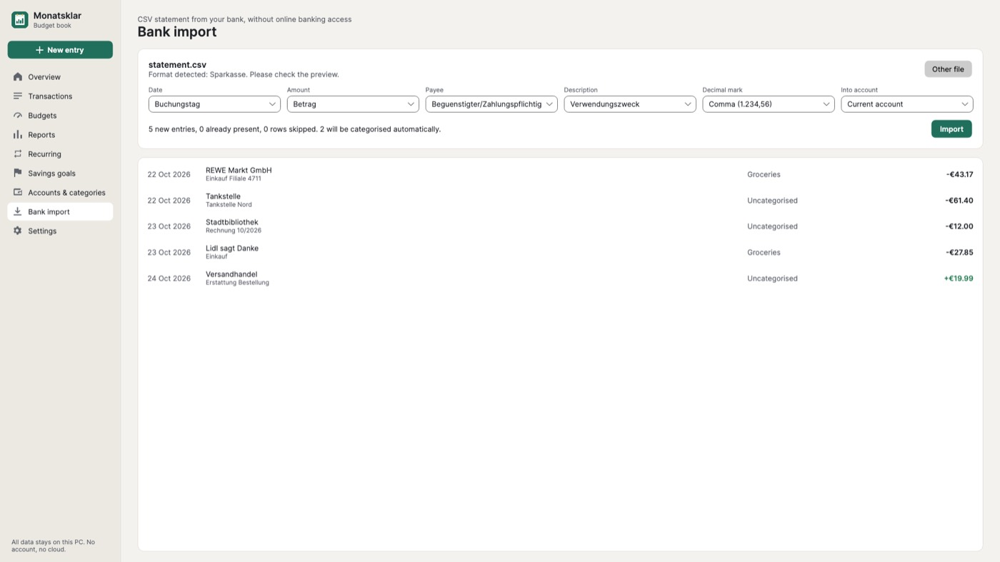
Kontoauszug per CSVBank statements via CSV
- Datei hineinziehen oder auswählen – Format wird erkannt
- Vorschau prüfen, einzelne Zeilen abwählen oder zuordnen
- Bereits importierte Buchungen werden übersprungen
- Import-Regeln ordnen Kategorien künftig automatisch zu
- Drag in or choose a file – the format is detected
- Check the preview, deselect or categorise rows
- Already imported entries are skipped
- Import rules assign categories automatically next time
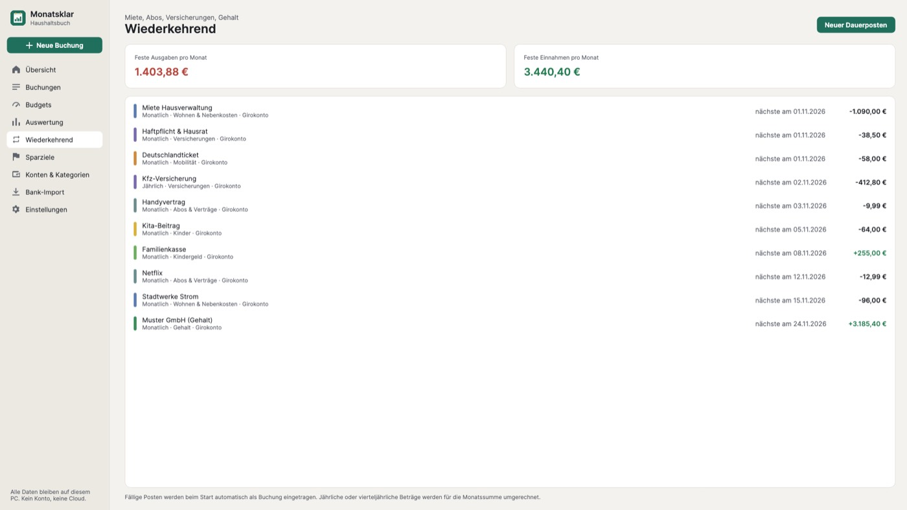
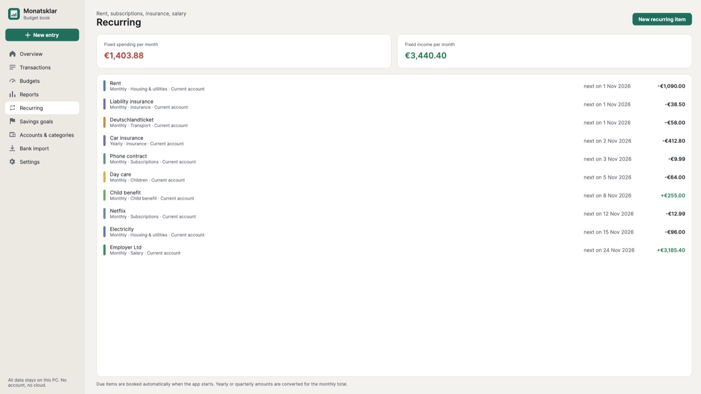
Fixkosten automatischFixed costs on autopilot
- Wöchentlich, monatlich, vierteljährlich, halbjährlich, jährlich
- Feste Ausgaben und Einnahmen pro Monat auf einen Blick
- Optional mit Enddatum
- Weekly, monthly, quarterly, half-yearly, yearly
- Fixed monthly spending and income at a glance
- Optional end date
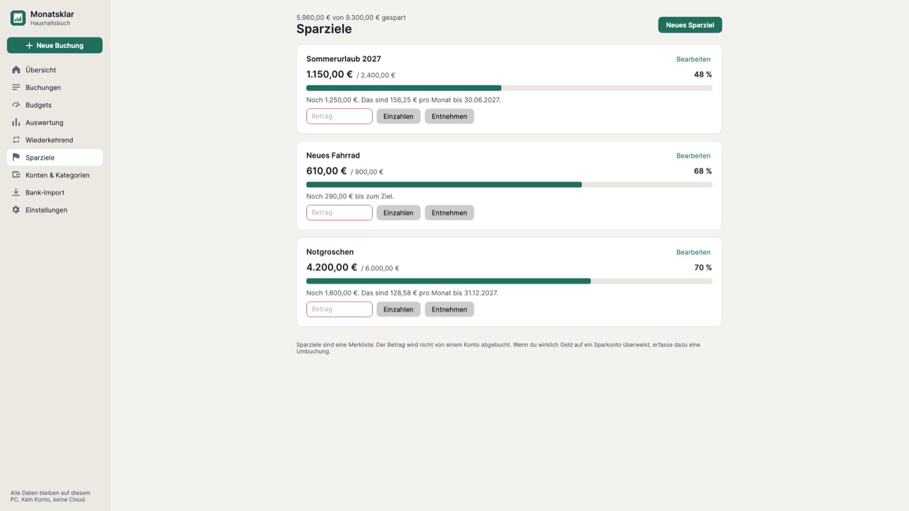
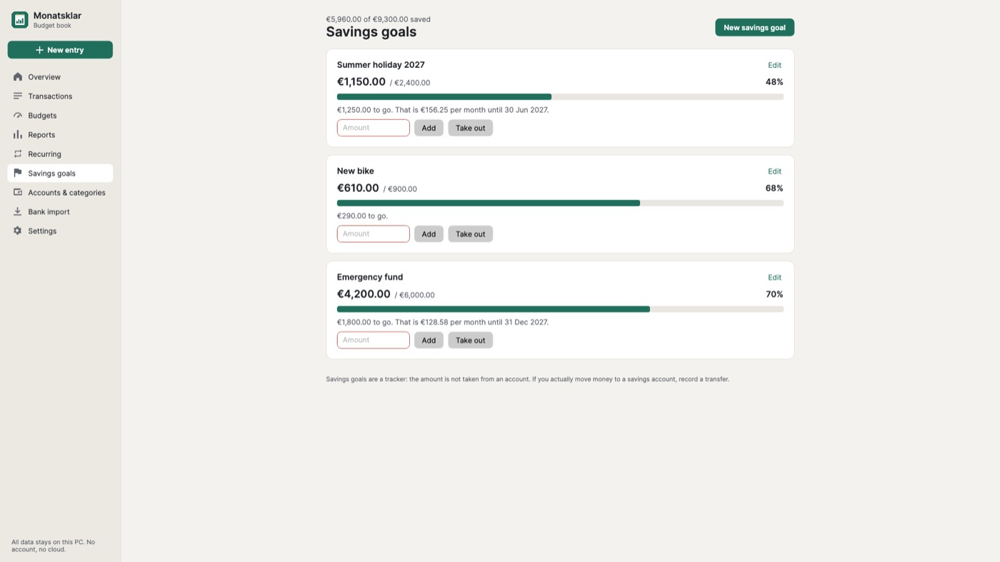
Sparziele mit MonatsrateSavings goals with a monthly amount
- Zielbetrag, bereits gespart, Zieldatum
- Einzahlen und Entnehmen
- Zeigt, wie viel du pro Monat zurücklegen musst
- Target, amount saved, deadline
- Deposit and withdraw
- Shows how much to put aside each month
Deine Bank ist dabeiWorks with your bank
Diese CSV-Formate erkennt Monatsklar automatisch. Für alle anderen Banken ordnest du Datum, Betrag, Empfänger und Verwendungszweck einmal zu und speicherst das als Importprofil.Monatsklar detects these CSV formats automatically. For any other bank, map date, amount, payee and purpose once and save it as an import profile.
Mehr BildschirmfotosMore screenshots
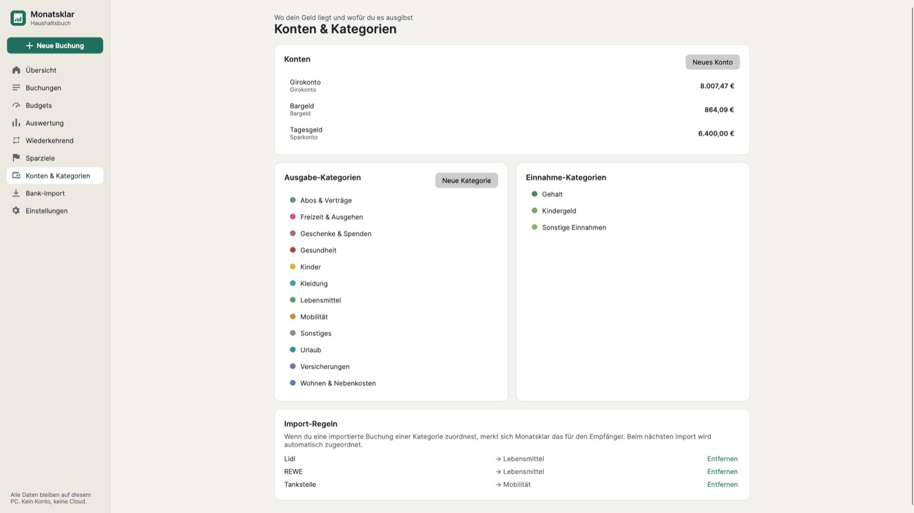
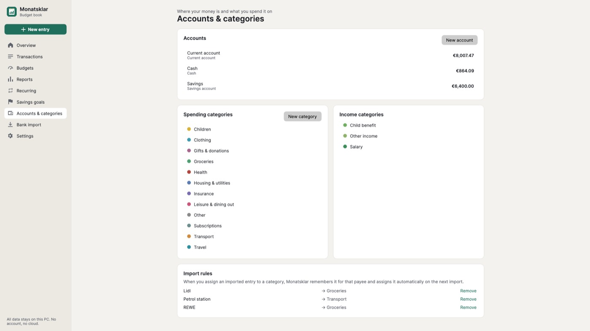
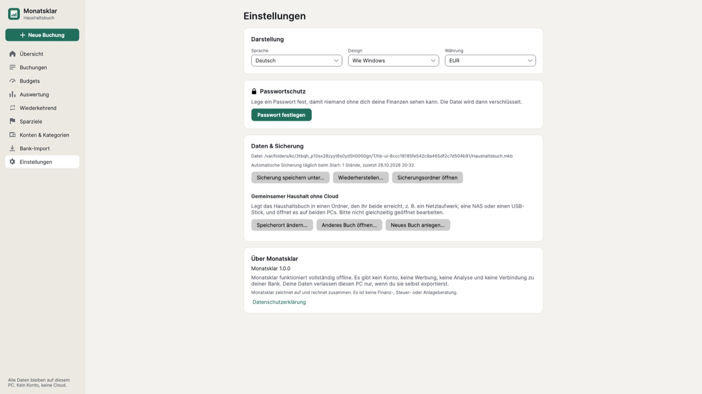
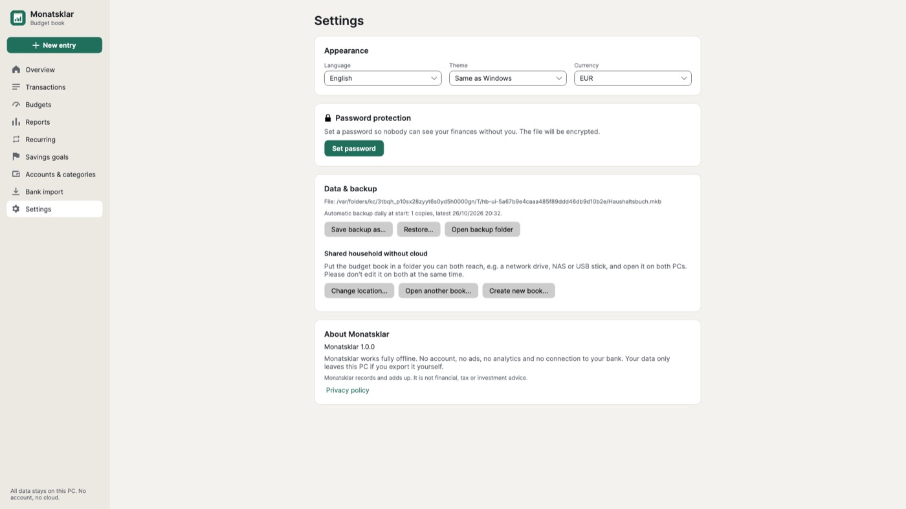
Bereit für einen klaren Monat?Ready for a clear month?
Monatsklar zeichnet auf und rechnet zusammen. Es ist keine Finanz-, Steuer- oder Anlageberatung. Bankformate können sich ändern; dann hilft die manuelle Spaltenzuordnung.Monatsklar records and adds up. It is not financial, tax or investment advice. Bank formats may change; manual column mapping then helps.